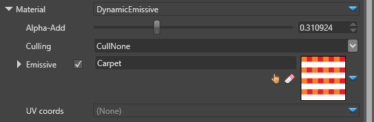
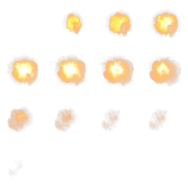
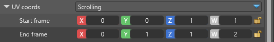

Particle materials
Warning
Приносим свои извинения за неудобства. Для этой страницы нет перевода на русский язык. Она будет отображаться на английском языке.
Beginner Artist Programmer
Materials define how the expanded shape should be rendered. They defines color, textures, and other parameters.
Particle materials are simplified versions of materials used for meshes. There is only one type of material currently, the Dynamic Emissive material.
Dynamic emissive
This material uses a translucent emissive color RGBA for the pixel shading. In HDR rendering mode, the values are used as intensity, and can be higher than 1.

| Property | Description |
|---|---|
| Alpha-Add | Translucent rendering supports alpha-blending, additive blending or anything in-between. With this parameter you can control how much alpha-blended (0) or additive (1) the particles should be. |
| Culling | There are options for no culling, front face culling and back face culling. Camera-facing particles always have their front face towards the camera. |
| Emissive | The emissive RGBA color for the particle. See Material maps for a full description. |
| UV coords | For particles which use texture sampling uv coordinates animation can be specified. The two currently existing types are specified below. |
UV Coords — Flipbook
The flipbook animation considers a texture a sequence of frames and displays it one frame at a time, like a flipbook.
This image is an example of a 4x4 flipbook animation texture of an explosion:

The flipbook animation has the following properties:

| Property | Description |
|---|---|
| X divisions | The number of columns to split the texture into |
| Y divisions | The number of rows to split the texture into |
| Starting frame | The frame to start the animation at. The top-left frame is 0 and increases by 1 from left to right before moving down. |
| Animation speed | The total number of frames to show over the particle lifetime. If Speed = X x Y, then the animation shows all frames over the particle lifetime. The speed is relative; particles with longer lifespans have slower animation. |
UV Coords — Scrolling
The scrolling animation defines a starting rectangle for the billboard or quad, which moves across the texture to its end position. This creates a scrolling or a scaling effect of the texture across the quad's surface.
The texture coordinates can go below 0 or above 1. How the texture is sampled depends on the addressing mode defined in the material maps. For more information, see the MSDN documentation.
The scrolling animation has the following properties:

| Property | Description |
|---|---|
| Start frame | The initial rectangle for texture sampling when the particle first spawns |
| End frame | The last rectangle for texture sampling when the particle disappears |